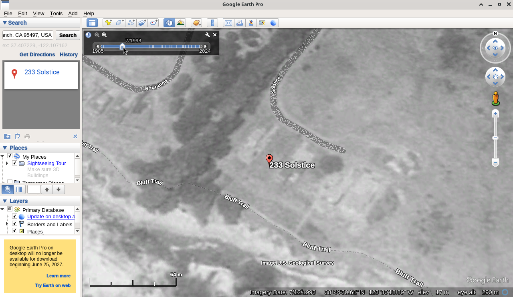
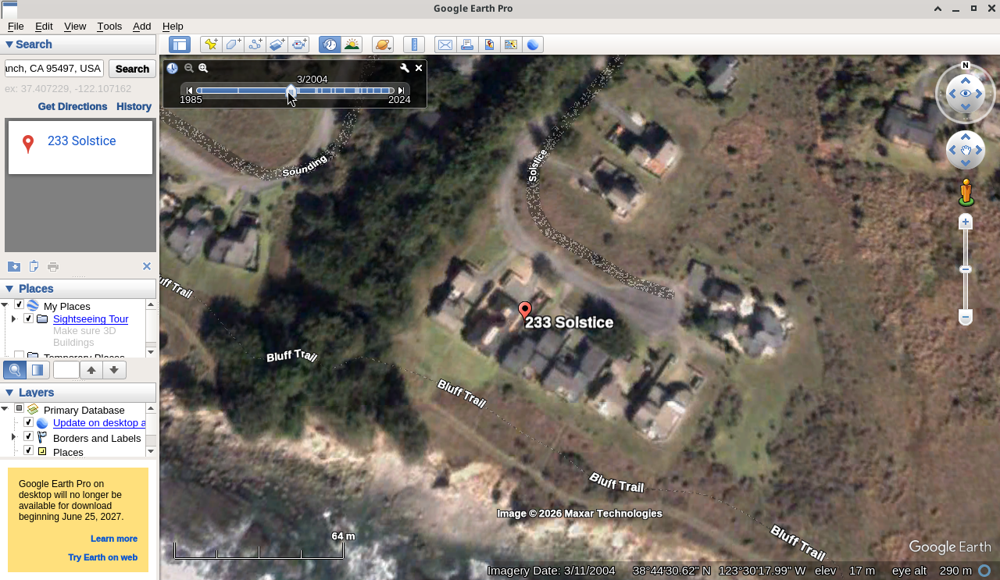
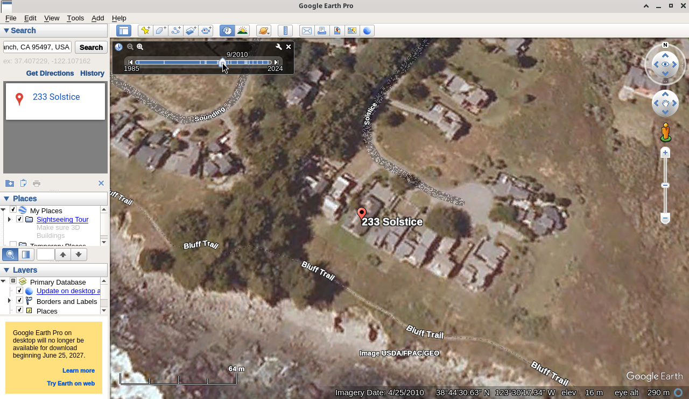
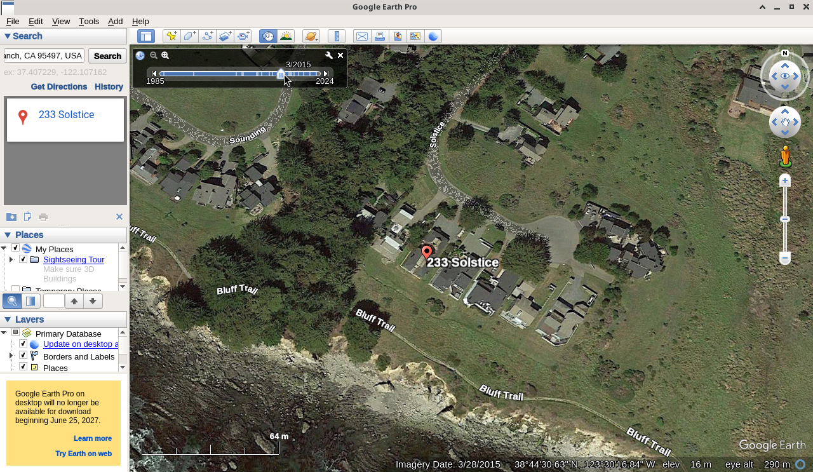
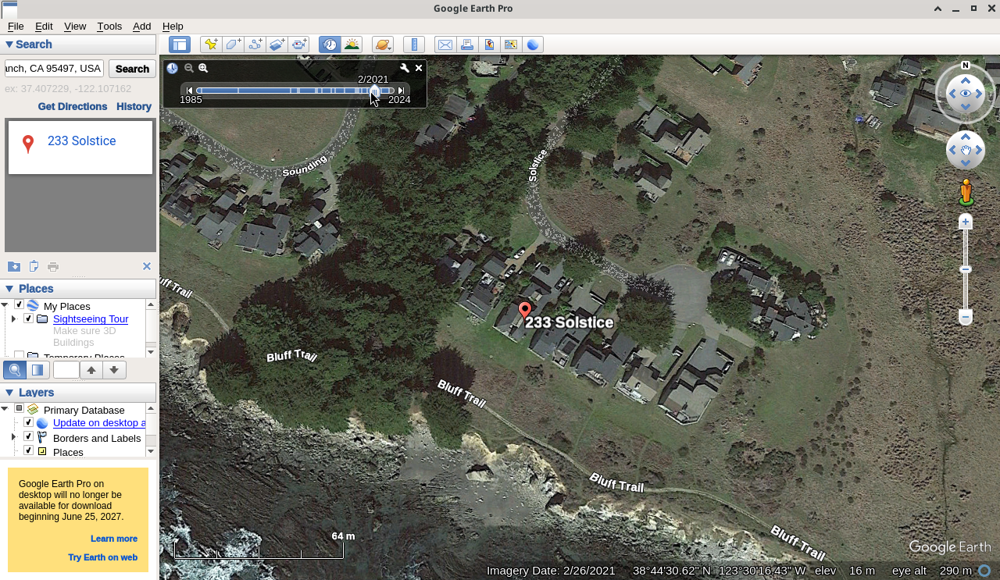
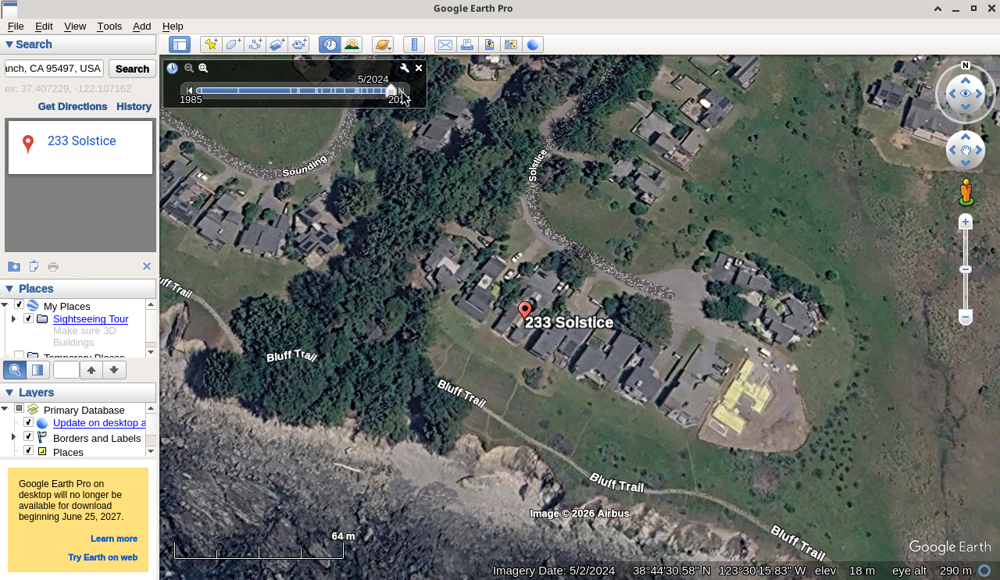

July 12, 1993
Inspector target ~1993 / 1998Earliest useful USGS black-and-white frame. House not yet built (listing year built: 2004).

Vertical Google Earth Pro historical imagery of 233 Solstice, The Sea Ranch, CA 95497. Same framing and scale across years so the cliff edge can be compared against the house and fixed features (roads, Bluff Trail, neighboring roofs).
Earliest useful USGS black-and-white frame. House not yet built (listing year built: 2004).

Color imagery; house present. Nearest available in the 2002–2004 window.


No 2016 tile for this site; March 2015 is the closest frame on the Earth Pro timeline.

No exact 2020 tile; February 2021 is the closest on the timeline.

